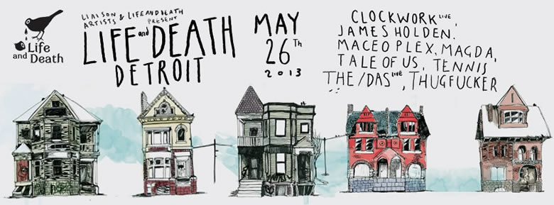

Clockwork: 'Based on a True Story'...

The Italian duo of Francesco Leali and Federico Maccherone AKA Clockwork made an impressive impact with their 2011 debut EP It’s You Again on Hot Creations. Comfortably riding the wave of hysteria around the stable’s output at that time, Clockwork’s profile was perhaps bigger that their actual musical outputmight have suggested – though this is certainly set to change with the surprise knockout that is their debut album B.O.A.T.S.
Out on the Life and Death stable, it’s already garnering praise from many quarters as one of the best dance releases of the year; although crucially, it’s scope goes well beyond mere club records. There’s a wealth of moody downbeat excursions to compliment the occasional, restrained adventures onto the dancefloor, and Clockwork have carefully balanced the steely techno with the more melodic elements; not to mention one of the year’s finest vocal records so far, in the form of Running Searching with Chasing Kurt.
It’s more sophisticated than you’d expect from any act on their debut album. I Voice talks with Clockwork to find out more about what went into creating the enigmatic B.O.A.T.S.
Hi Francesco and Federico. How has your 2013 been so far, and how are you feeling now your debut album has finally been released?
We’re doing great thanks. We’re pleased and stoked with all the positive reactions we’ve had from the album so far. We did take a chance in doing something unexpected and eclectic from our side, but we’re glad it worked out.
You’ve only been on our radar since 2011, though a debut EP on Hot Creations was a great way to get noticed. Tell us a little bit about the history of Clockwork so far.
It all came together pretty naturally, without ever thinking it could be something we could live off and do 24-7. Although both our musical backgrounds didn’t really connect to the genre, It’s You Again came out just as the Clockwork project was born, pretty instinctively. After Jamie Jones and Lee Foss’s interest shown towards the EP, we thought it was an excellent way to get our name out there and take it from there. We will never be too thankful towards those guys for having given us the ultimate support.
B.O.A.T.S. is most definitely a very sophisticated attempt at a first album. Did you have a good idea of what you wanted to achieve from the outset?
When we first started working on the album we had a pretty different out-take on how we wanted it to be, than what it turned out to be. The first two tracks we started working on were Places and One Way Ticket, so our idea was to create a more ‘classical’ sounding album with fewer electronic elements, but we decided to keep those and add to that with a little less introspectiveness and a more down-to-earth approach.
{kind=link}

The biggest surprise is how much you’ve taken it out of the clubs, and focused on what’s mostly a very downtempo affair. What inspired this approach?
We don’t really see the sense in making an LP filled up with 4/4 kicks and clubby-based sounds, that’s boring. We wanted our LP to tell a story of how we grew musically from day one, until today, showcasing our influences. To achieve this, we worked by imposing ourselves very few boundaries, and we have to admit it gave so much more space to be creative in different ways.
Would you say that the final result of B.O.A.T.S. took you a little bit more time, than if you’d focused a little more exclusively on dancefloor material?
It definitely took us more time to complete it. We had something like three final versions of the album before picking a decisive one, and 20 months went by. But we’re happy we took all that time, as the turnout really surprised us.
Running, Searching is definitely a standout. What are the different challenges in trying to build a track around a vocal?
If we work on a track that has a vocal line, we always build everything around the vocal and then develop the idea with what we came up with. So having always worked in that way, it wasn’t challenging at all. It was one of the most entertaining tunes to make in the album, to be honest.
There's a nice melodic edge throughout the album that compliments the more techy elements. How important is it for you to balance these two different sides of your music?
In this particular case, it was vital. Since we didn’t at all want to create a ‘clubby’ LP, we found that the balance between the electronic elements and acoustic elements had to be even. Some tracks are obviously more electronic than others, but we think we kept it pretty symmetrical.
Finally, what has Clockwork got planned for the rest of 2013?
Well, we have been working a lot with Avatism in the past two years, beyond just sharing a house, and we’ve done some work done we’re quite fond of. Nothing related to the club scene or culture in any way, so we’re working on that in our spare time. The rest of the time we’re putting our live set together for a special one off live performance with Avatism at Sonar By Night on the ‘Life and Death’ stage, and our live set in Chicago for the Electric Daisy Festival and Detroit at the LAD party. We’ll also be touring and making new music probably, so basically we’re never actually that bored.